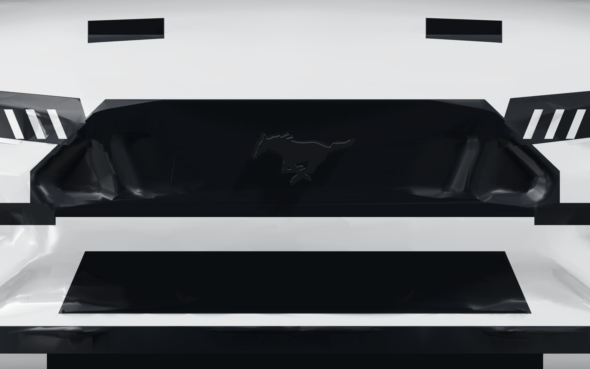
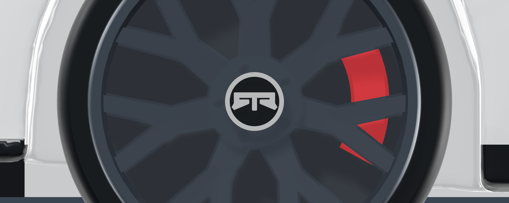
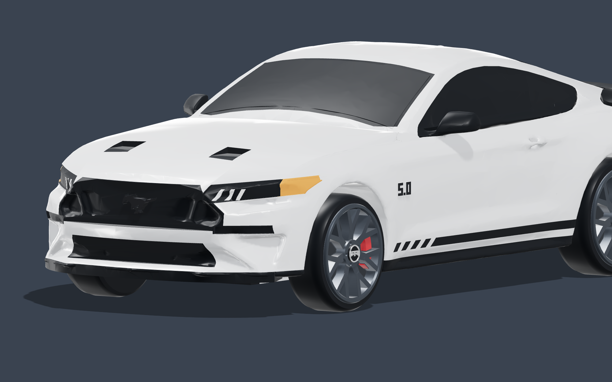
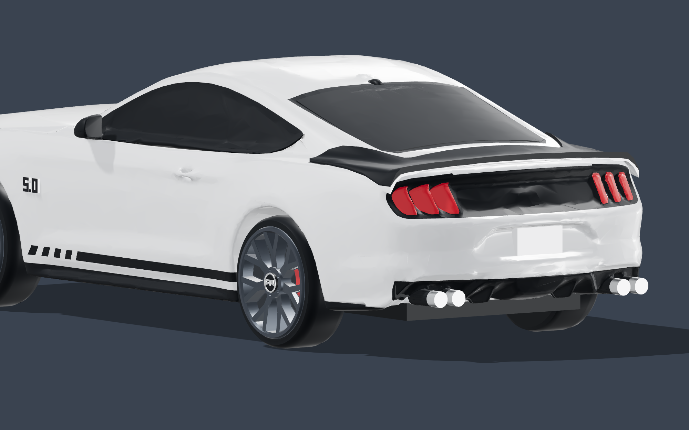

160 MM MUSTANG GT · PERSONAL GIFT
Your car, made miniature.
The model files and colour reference are prepared. The college technician must choose the real printer profile, check the slice and run a small sample before the full print.

Take this whole folder to college
- Open the print and assembly guide with the technician.
- If the printer supports multiple colours, use the multicolour parts and import instructions (white, black, red and dark grey). Keep each physical object's coloured parts aligned together and assign the matching filaments in the slicer.
- If it prints one colour, use the body STL and the four labelled wheel STLs in print/. Print in white and paint to match the colour sheet; the grille, lamps, vents, slots and diffuser are recessed so the details show even unpainted.
- Print the detail sample and one wheel at full scale. Then print one body and four wheels, finish and glue.
Printer model, material and colour capability are unconfirmed. These files are models for the slicer; no machine-ready G-code is included. Standard STL files do not contain colours.
What the model shows
Gloss-black running-pony badge in a recessed hexagonal grille, slim smoked headlamps with three LED slashes and amber corner markers, lower intake and chin splitter, twin hood vents, black wedge mirrors, dark door / quarter / windscreen / rear glass, black "5.0" fender badges readable on both sides, the four-hash-mark rocker stripe, seven-Y-spoke gunmetal RTR Aero 7 wheels with the RTR centre-cap monogram and red calipers, tri-bar tail lights, black rear panel and lip spoiler, rear diffuser with quad exhaust tips, a shark-fin antenna and a rear number plate (blank until the registration is supplied).




View the complete car
Interactive 3D viewer (open the folder with a local web server, e.g. python3 -m http.server, then browse to viewer.html) · Assembled OBJ + matching MTL colours
Keep the OBJ and MTL together. The assembly is for viewing; print the separate physical pieces. The wheels are fixed and glued in place.
Checks completed
Standard mesh checks pass for all six print STLs (body 160.00 × 69.73 × 40.59 mm, wheel 23.30 × 23.30 × 9.10 mm, assembly 160.00 × 69.73 × 46.59 mm). The multicolour volumes are closed, do not overlap and rebuild each part (record). Photo likeness score of the render loop: 88.4% (22/22 photo features, roof/deck profile within 0.58 mm) (how it is measured).
The earlier revision's generic single-colour slicing simulation estimated about 8 hours 37 minutes and 104 g for one body and four wheels; this revision has the same footprint and 2% less volume, so plan for a similar figure. The actual printer may differ; multicolour printing needs its own estimate. The plan comparison records what is complete and what remains. No physical model has been printed yet.
Body adapted from "Ford Mustang GT 2018" by SadPepe, Thingiverse 3192801, CC BY-NC 4.0. Wheels independently generated. See attribution and source notes. This is a simplified photo-inspired miniature, not a measured replica.